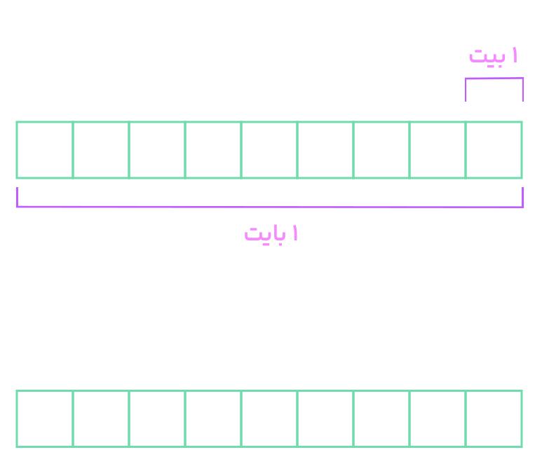

برای انجام اندازهگیریهای درست و قابل اطمینان به یکاهای اندازهگیری نیاز داریم که تغییر نکنند و دارای قابلیت بازتولید در مکانهای مختلف باشند. دستگاه یکاهایی که امروزه بیشتر مهندسان و دانشمندان علوم در سراسر جهان به کار میبرند را اغلب دستگاه متریک مینامند، ولی این دستگاه یکاها از سال 1960 میلادی، به طور رسمی دستگاه بینالمللی ($SI$) نامیده شده است. در سال 1971 میلادی، مجمع عمومی اوزان و مقیاسها، هفت کمیت را به عنوان کمیت اصلی انتخاب کرد که اساس دستگاه بینالمللی یکاها را تشکیل میدهند (جدول 1-1). یکای این کمیتها را یکاهای اصلی مینامند. سایر یکاهای دیگر را که بر حسب یکاهای اصلی بیان میشوند، یکاهای فرعی مینامند.
تعداد کمیتهای فیزیکی، بسیار زیاد و سازماندهی آنها دشوار است. خوشبختانه، بسیاری از کمیتهای فیزیکی مستقل از یکدیگر نیستند و توسط رابطهها و تعریفهای فیزیکی به یکدیگر وابستهاند. این وابستگی به ما کمک میکند تا لازم نباشد برای همه کمیتهای فیزیکی، یکای مستقل تعریف کنیم. برای مثال، همانطور که در علوم سال نهم دیدید، تندی متوسط به صورت نسبت مسافت به زمان تعریف میشود. اگر مسافت را که از جنس طول است، با یکای متر ($m$) و زمان را با یکای ثانیه ($s$) بیان کنیم، آنگاه یکای تندی متوسط در $SI$، متر بر ثانیه ($m/s$) خواهد شد. به این ترتیب، یکای فرعی متر بر ثانیه ($m/s$)، با یکاهای اصلی طول ($m$) و زمان ($s$) مرتبط میشود. در جدول 1-2 نمونههایی از یکاهای فرعی آمده است که در این کتاب از آنها استفاده میکنیم. همانطور که در این جدول نیز دیده میشود برای برخی از یکاهای پرکاربرد فرعی، نامی مخصوص قرار دادهاند، مثلاً یکای نیرو ($kg \cdot m/s^2$) را نیوتون ($N$) نامیدهاند. در این صورت گفته میشود: یکای $SI$ نیرو، نیوتون است. معرفی این یکاهای خاص در $SI$، ضمن احترام به فعالیتهای علمی دانشمندان گذشته، سبب سهولت در گفتار و نوشتار نیز میشود.
اندازهگیری و دستگاه بینالمللی یکاها
کمیت
نام یکا
نماد یکا
طول
متر
$m$
جرم
کیلوگرم
$kg$
زمان
ثانیه
$s$
دما
کلوین
$K$
مقدار ماده
مول
$mol$
جریان الکتریکی
آمپر
$A$
شدت روشنایی
کاندلا (شمع)
$cd$
چند مثال از یکاهای فرعی دستگاه
بین المللی (SI)
کمیت
نام یکا
یکای فرعی برحسب یکاهای اصلی
یکای فرعی
تندی و سرعت
متر بر ثانیه
$(m/s)$
$m/s$
شتاب
متر بر مربع ثانیه
$(m/s^2)$
$m/s^2$
نیرو
نیوتون
$(kg \cdot m/s^2)$
$N$
انرژی
ژول
$(kg \cdot m^2 / s^2)$
$J$
فشار
پاسکال
$(kg / ms^2)$
$Pa$
خوب است بدانید
خوب است بدانید در اواسط قرن نوزدهم نیاز به یک دستگاه مقیاس جهانی کاملاً آشکار شد. در سال 1875 میلادی، همایشی بینالمللی در پاریس در زمینه سنجش تشکیل شد و 17 دولت قرارداد متر را امضا کردند. امضاکنندگان تصمیم گرفتند که یک مؤسسه علمی دائمی به نام دفتر بینالمللی اوزان و مقیاسها تأسیس کنند. ایران نیز کنوانسیون متر را در سال 1354 امضا کرد و به عضویت این دفتر درآمد. مرکز اندازهشناسی سازمان ملی استاندارد ایران به عنوان نقطه اتصال کشور به دستگاه اندازهگیری جهانی، وظیفه ارتباط با این سازمان جهانی را دارد.
طول
به لحاظ تاریخی، در اواخر قرن هجدهم، یک واحد طول جهانی به نام متر تعریف شد. متر از لحاظ مفهومی برابر با یک ده میلیونیم فاصلهٔ قطب شمال تا خط استوا در طول نصفالنهار زمین در نظر گرفته شد. بعد از اندازهگیریهای متعدد و دقیق در قرن نوزدهم، نمونههایی از متر ساخته شد. این نمونهها از جنس پلاتین-ایریدیم بودند و به عنوان استانداردهای بینالمللی مورد استفاده قرار گرفتند. در سال 1960، تعریف متر با استفاده از طول موجهای تابش نور خاصی به روز رسانی شد. متر به عنوان 1٬650٬763٫73 برابر طول موج تابش نارنجی-قرمز کریپتون-86 در خلأ تعریف شد. این تعریف جدید متر را به یک واحد دقیقتر تبدیل کرد. در سال 1983، تعریف متر دوباره تغییر کرد و بر اساس سرعت نور در خلأ تعریف شد. بر اساس این تعریف، متر برابر با فاصلهای است که نور در مدت زمان 1/299٬792٬458 ثانیه طی میکند. این تعریف، متر را به دقیقترین و پایدارترین واحد طول تبدیل کرد که تاکنون استفاده شده است. با وجود این که این تعاریف به مرور زمان تغییر کردهاند، همه آنها با هدف ایجاد یک استاندارد دقیق و پایدار برای اندازهگیری طول ارائه شدهاند. این استانداردها نه تنها در علم و مهندسی، بلکه در زندگی روزمره و کاربردهای صنعتی نیز اهمیت بسیاری دارند.
جدول ۱ــ۳ مقادیر تقریبی برخی طولهای اندازهگیری شده
$9 \times 10^{1}$ طول زمین فوتبال
$2.8 \times 10^{21}$ فاصله منظومه شمسی تا نزدیکترین کهکشان
$5 \times 10^{-3}$ طول بدن نوعی مگس
$4 \times 10^{16}$ فاصله منظومه شمسی تا نزدیکترین ستاره
$1 \times 10^{-4}$ اندازه ذرات کوچک گرد و خاک
$9 \times 10^{15}$ یک سال نوری
$1 \times 10^{-5}$ اندازه یاختههای بیشتر موجودات زنده
$1.5 \times 10^{11}$ شعاع مدار میانگین زمین به دور خورشید
$0.2_2 \times 10^{-6}$ اندازه بیشتر میکروبها
$6.40 \times 10^{6}$ فاصله میانگین ماه از زمین
$1.06 \times 10^{-10}$ قطر اتم هیدروژن
$6.40 \times 10^{6}$ شعاع میانگین زمین
$1.75 \times 10^{-15}$ قطر هسته اتم هیدروژن (قطر پروتون)
$3.6 \times 10^{7}$ فاصله ماهوارههای مخابراتی از زمین
پرسش 1ـ 2
اگر مطابق شکل روبهرو، یکای طول را بهصورت فاصله نوک بینی تا نوک انگشتان دست کشیده شده بگیریم، چه مزایا و چه معایبی دارد؟
تمرین 1ـ 1
الف) یکای نجومی 2 برابر میانگین فاصله زمین تا خورشید است $(1AU \approx 1.50 \times 10^{11} m) $. با توجه به جدول 1ــ3، فاصله منظومه شمسی تا نزدیکترین ستاره، بر حسب یکای نجومی چقدر است؟
ب) مسافتی را که نور در مدت یک سال در خلأ میپیماید یک سال نوری مینامند و آن را با نماد \( \text{ly} \) نمایش میدهند. این فاصله را بر حسب متر محاسبه کنید. تندی نور را در خلأ \( 3.00 \times 10^8 \) متر بر ثانیه بگیرید.
پ) اختروشها دورترین اجرام شناختهشده از منظومه شمسی هستند و به عبارتی در دورترین محل قابل مشاهده کیهان قرار دارند. فاصله اختروشها از منظومه شمسی \( 1.00 \times 10^{26} \) متر برآورد شده است. این فاصله را بر حسب سال نوری بیان کنید.
جرم
واحد اندازهگیری جرم در دستگاه بینالمللی یکاها (SI)، کیلوگرم (kg) است. تعریف اولیه کیلوگرم بر اساس جرم یک لیتر آب در دمای 4 درجه سلسیوس بود. اما به منظور دستیابی به دقت بیشتر، یک استوانه از جنس پلاتین-ایریدیم به عنوان استاندارد کیلوگرم ساخته شد و این استاندارد در دفتر بینالمللی اوزان و مقیاسها (BIPM) نگهداری میشود. این استاندارد تا سال 2019 معتبر بود. در سال 2019، تعریف کیلوگرم تغییر کرد و بر اساس ثابت پلانک (h) تعریف شد. بر اساس این تعریف، کیلوگرم برابر با جرم یک جسمی است که ثابت پلانک آن برابر با 6.62607015×10^-34 ژول ثانیه باشد. این تعریف جدید، کیلوگرم را به یک واحد دقیقتر و پایدارتر تبدیل کرده است. واحدهای اندازهگیری جرم شامل گرم (g) و میلیگرم (mg) نیز هستند که به ترتیب برابر با 1/1000 کیلوگرم و 1/1٬000٬000 کیلوگرم میباشند.
جدول ۱ــ۴ مقادیر تقریبی برخی جرمهای اندازهگیری شده
(kg) جرم
$1 \times 10^{52}$ عالم قابل مشاهده
$7 \times 10^{1}$ انسان
$7 \times 10^{41}$ کهکشان راه شیری
$1 \times 10^{-1}$ قورباغه
$2 \times 10^{30}$ خورشید
$1 \times 10^{-5}$ پشه
$6 \times 10^{24}$ زمین
$1 \times 10^{-15}$ باکتری
$7.34 \times 10^{22}$ ماه
$1.67 \times 10^{-27}$ اتم هیدروژن
$1 \times 10^{۳}$ کوسه
$9.11 \times 10^{-31}$ الکترون
زمان
واحد اندازهگیری زمان در دستگاه بینالمللی یکاها (SI)، ثانیه (s) است. تعریف اولیه ثانیه بر اساس کسری از یک روز خورشیدی متوسط بود. اما با پیشرفت علم و فناوری، تعریف ثانیه بر اساس خواص ذرات بنیادی تغییر کرد. در حال حاضر، ثانیه برابر است با مدت زمانی که در آن 9٬192٬631٬770 دوره تابش مربوط به انتقال بین دو تراز ریزساختار حالت پایه اتم سزیم-133 در دمای صفر مطلق رخ میدهد. این تعریف بر اساس ویژگیهای اتمی و بنیادی، دقت بسیار بالایی دارد و در ساعتهای اتمی مورد استفاده قرار میگیرد. واحدهای اندازهگیری زمان شامل دقیقه (min) و ساعت (h) نیز هستند که به ترتیب برابر با 60 ثانیه و 3600 ثانیه میباشند.
جدول ۱ــ۵ مقادیر تقریبی برخی از بازههای زمانی اندازهگیری شده
بر حسب ثانیه
$5 \times 10^{17}$
سن عالم
$1.43 \times 10^{17}$
سن زمین
$2 \times 10^{9}$
میانگین عمر یک انسان
$3.15 \times 10^{7}$
یک سال
$8.6 \times 10^{4}$
یک روز
$8 \times 10^{-1}$
زمان بین دو ضربان عادی قلب
فعالیت 1ـ 2
در خصوص چگونگی اندازهگیری زمان از دوران باستان تا عصر حاضر مطالبی را بهطور مستند تهیه کنید. مطالب تهیهشده را با توجه به مهارت و علاقهمندی افراد گروه خود، به یکی از شکلهای روزنامه دیواری، پاورپوینت، قطعه فیلم کوتاه و... به کلاس درس ارائه دهید.
نکات پاورقی
1ــ در بیست و ششمین مجمع عمومی اوزان و مقیاسها که در آبان 1397 برگزار شد تعریف یکاهای کیلوگرم، آمپر، کلوین و مول تغییر کرد. براساس تعریفهای جدید، کیلوگرم براساس ثابت پلانک (h)، آمپر براساس بار بِنیادی (e)، کلوین براساس ثابت بولتزمان (k) و مول براساس ثابت آووگادرو (NA) بازتعریف شدند.
2ــ یک روز خورشیدی، زمان بین ظاهرشدنهای متوالی خورشید در بالاترین نقطه آسمان در هر روز است.
3ــ ساعتهای اتمی پس از چندین میلیون سال، تنها یک ثانیه جلو یا عقب میافتند!
خوب است بدانید
چندین هزار سال از توجه جوامع بشری به ضرورت اندازهگیری و کاربرد آن در زندگی روزمره میگذرد. ایجاد تقویم، تعیین زمان، اندازهگیری فاصله، مساحت، ساخت وزنه و پیمانه تنها نمونههایی از شواهدی هستند که نقش اندازهگیری را در زندگی انسانهای دورههای مختلف نشان میدهد. اولین قانون اندازهگیری در ایران، سال 1304 هـ.ش به تصویب رسید. با تصویب این قانون دستگاه متریک به عنوان دستگاه رسمی اندازهگیری در کشور تعیین شد. اجرای قانون اندازهگیری در کشور به عهده مرکز اندازهشناسی سازمان ملی استاندارد ایران است. این مرکز شامل بخشهایی مربوط به اندازهگیریهای مکانیکی، فیزیکی و الکتریکی است.
تبدیل یکاها:
اغلب در حل مسئلههای فیزیک، لازم است یکای کمیتی را تغییر دهیم. برای مثال، ممکن است لازم باشد کیلوگرم (kg) را به میکروگرم (μg)، یا متر بر ثانیه (m/s) را به کیلومتر بر ساعت (km/h) تبدیل کنیم. این کار با روش تبدیل زنجیرهای انجام میشود. در این روش، اندازه کمیت را در یک ضریب تبدیل (نسبتی از یکاها که برابر عدد یک است) ضرب میکنیم. برای مثال، چون ۱ m برابر ۱۰۰ cm است، داریم:
بنابراین، هر دو کسر بالا را که برابر یک هستند میتوان به عنوان ضریب تبدیل بهکار برد (ذکر یکاها در صورت و مخرج کسر الزامی است.) از آنجا که ضرب کردن هر کمیت در عدد یک، اندازه آن کمیت را تغییر نمیدهد، هرگاه ضریب تبدیلی را مناسب بدانیم میتوان از آن استفاده کرد. برای مثال، یکای cm را در ۸۵ cm، بهصورت زیر به یکای m تبدیل میکنیم:
چندین هزار سال از توجه جوامع بشری به ضرورت اندازهگیری و کاربرد آن در زندگی روزمره میگذرد. ایجاد تقویم، تعیین زمان، اندازهگیری فاصله، مساحت، ساخت وزنه و پیمانه تنها نمونههایی از شواهدی هستند که نقش اندازهگیری را در زندگی انسانهای دورههای مختلف نشان میدهد. اولین قانون اندازهگیری در ایران، سال 1304 هـ.ش به تصویب رسید. با تصویب این قانون دستگاه متریک به عنوان دستگاه رسمی اندازهگیری در کشور تعیین شد. اجرای قانون اندازهگیری در کشور به عهده مرکز اندازهشناسی سازمان ملی استاندارد ایران است. این مرکز شامل بخشهایی مربوط به اندازهگیریهای مکانیکی، فیزیکی و الکتریکی است.
تمرین 1ـ 2
در فیزیک، تغییر هر کمیت را نسبت به زمان، معمولاً آهنگ آن کمیت مینامیم. از شیلنگ شکل روبهرو، آب با آهنگ ۱۲۵ cm³/s خارج میشود. این آهنگ را به روش تبدیل زنجیرهای، بر حسب یکای لیتر بر دقیقه (L/min) بنویسید. (هر لیتر معادل ۱۰۰۰ سانتیمتر مکعب است.)
فعالیت 1ـ 3
خروار، من تبریز، سیر، مثقال، نخود و گندم از جمله یکاهای قدیمی ایرانی برای اندازهگیری جرم است1. این یکاها بهصورت زیر به یکدیگر مرتبطاند:
با توجه به اینکه هر مثقال اندکی بیش از 4.6 گرم است، یکاهای سیر و گندم را بر حسب گرم و کیلوگرم بیان کنید.
با توجه به اینکه هر مثقال اندکی بیش از 4/6 گرم است، یکاهای سیر و گندم را بر حسب گرم و کیلوگرم بیان کنید.
سازگاری یکاها:
هر کمیت فیزیکی را با نماد مشخصی نشان میدهیم. برای مثال اندازه شتاب را با \(a\) و جرم را با \(m\) نشان میدهیم. همچنین برای بیان ارتباط بین کمیتهای فیزیکی، از روابط و معادلهها استفاده میکنیم. یکی از این رابطههای فیزیکی، قانون دوم نیوتون، \(F = ma\)، است که در علوم سال نهم با آن آشنا شدید. هنگام استفاده از این رابطه و جایگذاری اندازه هر کمیت در آن، باید به سازگاری یکاها در دو طرف رابطه توجه کنیم. اگر بخواهیم حاصل دو طرف رابطه برحسب یکاهای SI بیان شود باید یکای کمیتهای داده شده را نیز به یکاهای SI تبدیل کنیم. برای مثال، اگر جرم جسمی ۳۲۵ گرم و شتاب آن \(1.75 \frac{m}{s^2}\) باشد، برای سازگاری یکاها در دو طرف معادله، باید یکای جرم جسم را به کیلوگرم تبدیل کنیم. در این صورت مقدار حاصل را میتوان برحسب یکای نیوتون بیان کرد.
\(F = ma = (0.325 \, \text{kg}) (1.75 \, \frac{m}{s^2}) = 0.569 \, \text{N}\)
یکای دو طرف معادله با هم سازگار است. (جدول 1ــ 2 را ببینید.)
پیشوندهای یکاها:
هرگاه در اندازهگیریها با اندازههای بسیار بزرگتر یا بسیار کوچکتر از یکای اصلی آن کمیت مواجه شویم، از پیشوندهایی استفاده میکنیم که در جدول 1ــ6 فهرست شدهاند. همانطور که از ضرایب تبدیل جدول پیداست هر پیشوند، توان معینی از ۱۰ را نشان میدهد که بهصورت یک عامل ضرب بهکار میرود (به بزرگ و کوچک بودن حروف نمادها توجه کنید). یعنی وقتی پیشوندی به یکایی افزوده میشود، آن یکا در ضریب مربوطه ضرب میشود، مثلاً یک میکرومتر (\(1 \mu m\)) که به آن میکرون نیز میگویند برابر \(10^{-6} \, m\) است یا سه مگاوات (\(3 \, MW\)) برابر \(10^6 \, W \times 3\) است.
پیشوندهایی که کاربرد بیشتری دارند و بهتر است آنها را به خاطر بسپارید با رنگ آبی نشان داده شدهاند.
جدول ۱ــ۶ پیشوندهای یکاها
نماد
پیشوند
ضریب
نماد
پیشوند
ضریب
y
یوکتو
$10^{-24}$
Y
یوتا
$10^{24}$
z
زپتو
$10^{-21}$
Z
زتا
$10^{21}$
a
اتو
$10^{-18}$
E
اگزا
$10^{18}$
f
فمتو
$10^{-15}$
P
پتا
$10^{15}$
p
پیکو
$10^{-12}$
T
ترا
$10^{12}$
n
نانو
$10^{-9}$
G
گیگا (جیگا)
$10^{9}$
μ
میکرو
$10^{-6}$
M
مگا
$10^{6}$
m
میلی
$10^{-3}$
k
کیلو
$10^{3}$
c
سانتی
$10^{-2}$
h
هکتو
$10^{2}$
d
دسی
$10^{-1}$
da
دکا
$10^{1}$
نمادگذاری علمی:
در برخی از اندازهگیریها با مقدارهای خیلی بزرگ یا خیلی کوچک سر و کار داریم؛ مثلاً برای نوشتن جرم زمین بر حسب کیلوگرم باید تعداد ۲۲ صفر را بعد از عدد ۵۹۸ بنویسیم یا برای نوشتن جرم یک الکترون بر حسب کیلوگرم باید بعد از ممیز، ۳۰ عدد صفر قرار دهیم و پس از آن عدد ۹۱۰۹ را بنویسیم. بدیهی است نوشتن چنین عددهایی بهصورت اعشاری یا با صفرهای زیاد، علاوه بر دشواری در خواندن و نوشتن، احتمال اشتباه را نیز افزایش میدهد. از این رو، با استفاده از روشی که آن را نمادگذاری علمی مینامند، نوشتن و محاسبه مقدارهای خیلی بزرگ یا خیلی کوچک سادهتر میشود. اندازه هر کمیت فیزیکی، که بهصورت نمادگذاری علمی بیان میشود، باید شامل سه قسمت باشد. قسمتهای اول و دوم، دربرگیرنده حاصلضرب عددی از ۱ تا ۱۰ در توان صحیحی از ۱۰ است و در قسمت سوم، یکای آن کمیت نوشته میشود. برای آشنایی بیشتر با نمادگذاری علمی، به مثالهای جدول ۱ــ۷ توجه کنید.
جدول ۱ــ۷ بیان اندازه چند کمیت بهصورت نمادگذاری علمی
بیان بهصورت نمادگذاری علمی
اندازه کمیت (شامل عدد و یکا)
نمونه
$2.60 \times 10^{10} L$
$26,000,000,000 L$
حجم بنزین مصرفی در ایران در سال ۱۳۹۴
$3.00 \times 10^{8} m/s$
$300,000,000 m/s$
تندی نور در هوا
$3.89 \times 10^{7} m$
$38,900,000 m$
طول کل خطوط انتقال نفت خام، گاز و سایر فرآوردههای سوختی در ایران
$1.59 \times 10^{2} L$
$159 L$
حجم یک بشکه نفت
$8.01 \times 10^{-6} m$
$0.00000801 m$
قطر موی انسان
$1.06 \times 10^{-10} m$
$0.000000000106 m$
قطر اتم هیدروژن
مثال 1ـ 1
مقدار بار الکتریکی الکترون \( 160 \times 10^{-15} \, \mu C \) است. مقدار این بار را برحسب کولن و با نمادگذاری علمی بنویسید.
پاسخ: با توجه به جدول ۱ــ۶، پیشوند میکرو (\( \mu \)) برابر \( 10^{-6} \) است. به این ترتیب داریم:
\( 160 \times 10^{-15} \, \mu C = 160 \times 10^{-21} \, C = 1.60 \times 10^{-19} \, C \)
پرسش 1ـ 3
کدام گزینه جرم یک زنبور عسل (\( 0.00015 \, kg \)) را بهصورت نمادگذاری علمی درست بیان میکند؟
\( 15 \times 10^{-5} \, kg \)
\( 1.5 \times 10^{-5} \, kg \)
\( 1.5 \times 10^{-4} \, kg \)
\( 0.15 \times 10^{-3} \, kg \)
تمرین 1ـ 3
با توجه به پیشوندهای یکاهای SI و نمادگذاری علمی جدول زیر را کامل کنید.
کمیت
بیان بهصورت نمادگذاری علمی
پیشوند
پیشوند
قطر میانگین یک گویچه (گلبول) قرمز
$ 0.7 \times 10^{-6} \, m $
...... mm
...... μm
قطر هسته اتم اورانیوم
$ 1.7 \times 10^{-14} \, m $
...... pm
...... fm
جرم یک گیره کاغذ
$ 1.0 \times 10^{-4} \, kg $
...... g
...... mg
زمانی که نور مسافت 0.3 متر را در هوا طی میکند.
$ 1.0 \times 10^{-9} \, s $
...... μs
...... ns
زمانی که صوت مسافت 0.35 متر را در هوا طی میکند.
$ 1.0 \times 10^{-3} \, s $
...... ms
...... μs
خوب است بدانید
یکای پایه یا بنیادی اطلاعات در رایانه و ارتباطات، بیت (bit) است. هر بیت تنها با دو مقدار ۰ و ۱ تعریف میشود. این دو مقدار میتوانند بهصورت مقدارهای منطقی (درست/ نادرست، آری/ نه)، علائم جبری (+/-) یا حالتهای راهاندازی (روشن/ خاموش) تفسیر شوند.
به دستههای ۸ تایی از بیتها، بایت میگویند (\( 1B = 8b \)). یک بایت میتواند نشاندهنده یک کاراکتر (یک حرف، یک عدد صحیح بین ۰ تا ۹، یا یک علامت نشانهگذاری و غیره) باشد. برای مثال، کد حرف A و a بهصورتهای زیر است:

با کمی دقت متوجه میشویم که هر بایت میتواند ۲۵۶ ترکیب ۸ تایی از صفرها و یکها بسازد، که هر کدام نماینده یک نویسه (کاراکتر) هستند. پیشوندهای بزرگتر یکای بنیادی اطلاعات به صورت کیلوبیت (Kb)، مگابیت (Mb)، گیگابیت (Gb)، ترابیت (Tb) و غیره هستند. در مبنای دوتایی، هر کیلو برابر با ۱۰۲۴ = \(2^{10}\) است، در حالی که در SI هر کیلو برابر با \(10^3\) است.
یکا
ضریب
کیلوبیت
\(1 \, \text{kb} = 1024 \, \text{b}\)
مگابیت
\(1 \, \text{Mb} = 1024 \, \text{kb}\)
گیگابیت
\(1 \, \text{Gb} = 1024 \, \text{Mb}\)
ترابیت
\(1 \, \text{Tb} = 1024 \, \text{Gb}\)
پتابیت
\(1 \, \text{Pb} = 1024 \, \text{Tb}\)
اگزابیت
\(1 \, \text{Eb} = 1024 \, \text{Pb}\)
زتابیت
\(1 \, \text{Zb} = 1024 \, \text{Eb}\)
یوتابیت
\(1 \, \text{Yb} = 1024 \, \text{Zb}\)
ظرفیت ذخیرهسازی در حافظههای مختلف مانند SD، DVD، USB و ... به واحدهای بالا مدرج است.